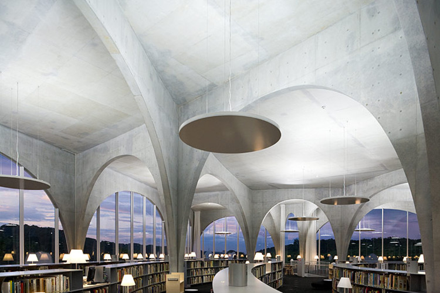
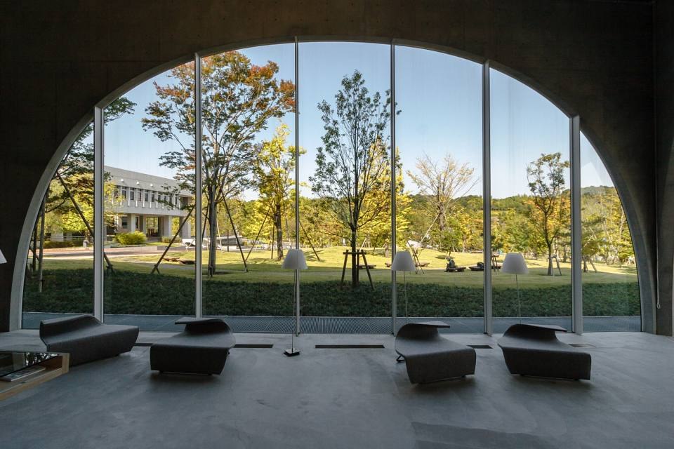

Tama Art University Library
La bibliothèque de l’université d’art de Tama est composée de deux bibliothèques situées à Tokyo, au Japon : une sur le campus de Hachioji et l’autre sur le campus de Kaminoge. Ces bibliothèques ont été conçues par l’architecte japonais Toyo Ito, qui a créé un espace ouvert et dynamique où les étudiants et les enseignants peuvent découvrir leur style d’interaction avec les livres et les médias audiovisuels.
Les deux bibliothèques sont ouvertes au public prochainement afin de se rapprocher davantage de la communauté locale. Vous pouvez accéder à leur inventaire en ligne via OPAC (catalogue public en ligne) ou consulter une partie des collections Takiguchi et Kitazono sur Internet.